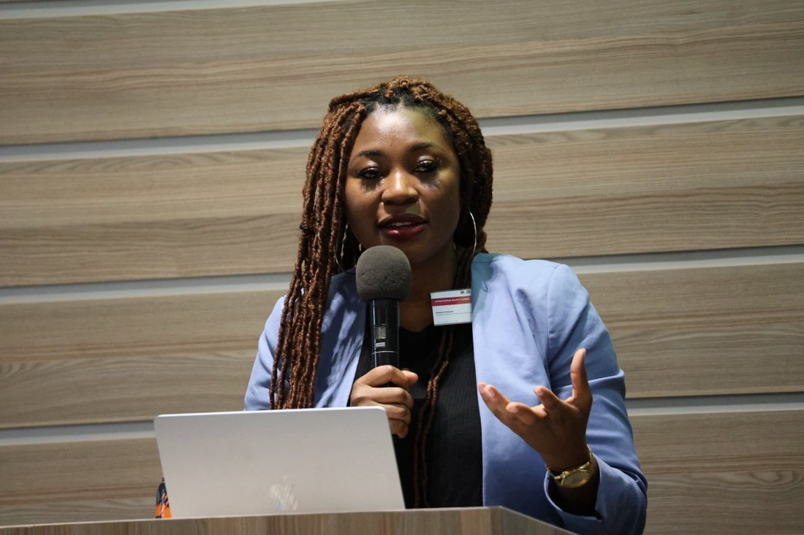
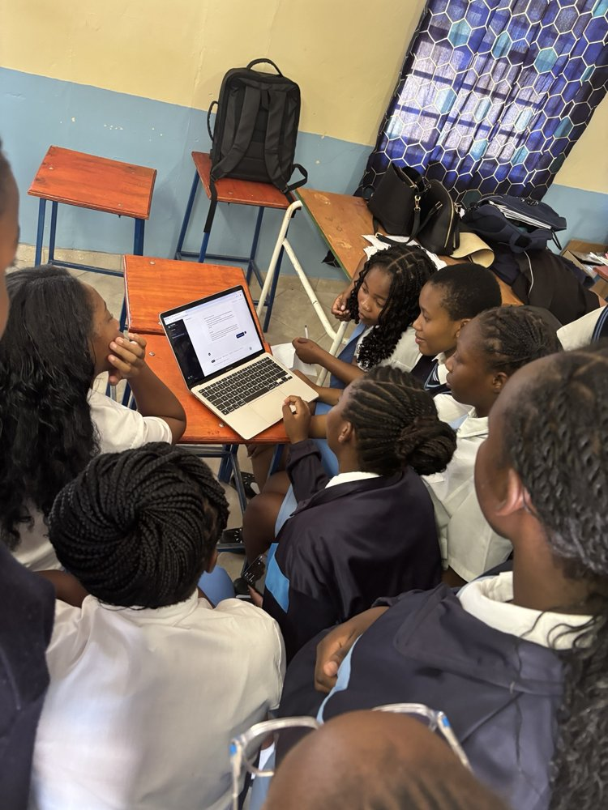

Contributing to the SIGIR Futures for Africa research-agenda discussions, with an interest in information retrieval for African education.
This page was not found. Please use the navigation below.

Lecturer & PhD researcher
Josephina Muntuumo
Computer Scientist · Educator · Researcher
Namibia University of Science and Technology
University of Eastern Finland
I am a lecturer at the Namibia University of Science and Technology and a PhD researcher at the University of Eastern Finland. My work explores how sustainable, inclusive technology education can expand opportunities for young learners in Namibia.
How can we design technology learning that works in the places where learners live, with the resources they have?
My research brings together educational robotics, artificial intelligence and STEM learning. I am particularly interested in context-sensitive design, access in low-connectivity environments, and the support that teachers and learners need to use technology meaningfully.
Alongside my academic work, I have contributed to digital transformation and community technology initiatives, including CodeBus Africa and research on children’s online safety. My academic qualifications and professional experience are detailed on the CV page.
news
All updates →Developing STEMMate, an AI-supported STEM learning and teacher-support project for the Namibian context.
Prepared a SIGIR Low Resource Track talk on offline-first information retrieval for curriculum-aligned STEM resources in Namibian schools.
selected publications
Full list →IMITEC2021
Challenges of E-Commerce Adoption Within a Namibian Conglomerate
C. G. Ganes, G. T. Nhinda and J. Muntuumo
3rd International Multidisciplinary Information Technology and Engineering Conference, pp. 1–5.
DOI ↗IMITEC2021
Designing an Interactive Game for Preventing Online Abuse in Namibia
J. Mikka-Muntuumo and A. N. Peters
3rd International Multidisciplinary Information Technology and Engineering Conference, pp. 1–6.
DOI ↗Current project
STEMMate AI tutoring
Exploring curriculum-aligned support for secondary-school STEM learning, with attention to teacher needs, factual accuracy and learner independence.
Explore STEMMate ↗Ongoing development and research; educational effectiveness is not claimed here.
